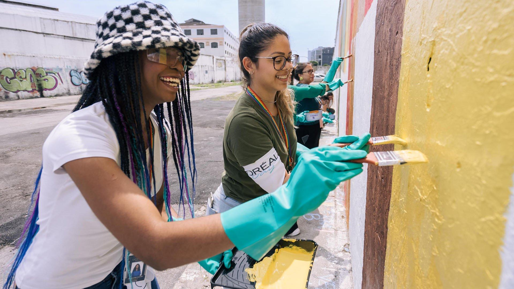

Quem Somos

A ONG Mãos que Transformam é uma organização sem fins lucrativos dedicada a promover ações sociais e contribuir para a melhoria da qualidade de vida de pessoas e comunidades em situação de vulnerabilidade.
Desenvolvemos projetos voltados à solidariedade, à inclusão social e à criação de oportunidades, contando com o apoio de voluntários e parceiros.